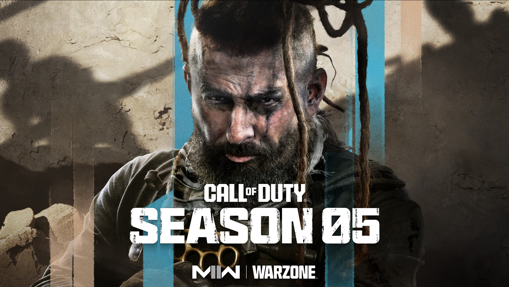

Home
Season 5/Season 5 reloaded

Creative Commons license-CC BY-NC-ND 4.0, owner- activision/microsoft
MWll season 5 has had many large changes the biggest of which being the new battle royale map- Al-Baqarah fortress which is a similar size to the old MW2019 map Verdansk as well as the new vehicle the M-rap which is a heavily armoured vehicle with a grenade launcher and a turret on top and also a new weapon the M13c a BLK variant of the M13b. During the second half of the season, we also got to see the new game mode armoured Royale which uses the M-rap as the player respawn point and as a moving base.
Season 5 reloaded started with a bang as three new weapons got added to the game the lockman-shroud, pickaxe/Ice-axe and the Daemon, alongside these things there was also another mastery camo called Eddie's supreme surprise. Other than this the community is patiently waiting for the release of MWlll.
Click here to learn about MWlll